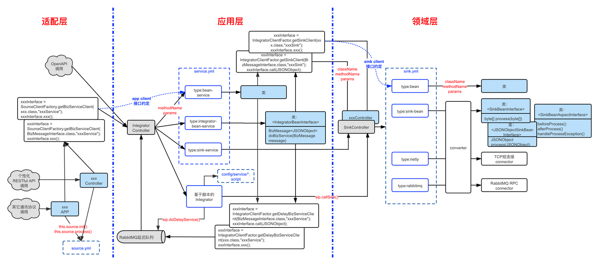

系统配置
Biz-SIP中间件通过配置来构建系统的介绍。
一、概述
Biz-SIP中间件在开发应用时，主要涉及配置文件编写和Java代码开发，系统架构如下所示：  上图中蓝色虚框所呈现的部分，就主要是Biz-SIP中间件的配置文件。 Biz-SIP中间件的配置文件，一般都统一存放在配置目录下（由application.yml文件中的bizsip.config-path配置项所约定)，配置目录中的文件如下例所示：
config
|____sink.yml
|____source.yml
|____service.yml
|____converter
| |____server3
| | |____woman.vm
| | |____error.vm
| | |____man.vm
|____service
| |____client1
| | |____error.script
| |____openapi
| | |____sample1.script
| | |____sample5.script
| | |____sample2.script
| | |____sample4.script
|____check-rule
| |____client1
| | |____sample1.yaml
sink.yml：领域层sink模块的配置文件 source.yml：渠道层source模块的配置文件 service.yml：应用层app聚合服务的的配置文件（非脚本的服务） service目录：存放所有的应用层app聚合服务编排脚本 converter目录：存放消息转换器converter相关的消息格式转换配置文件 check-rule目录：存放聚合服务校验规则配置文件
二、应用层app配置（服务编排配置）
1. service.yml
定义了所有非脚本类聚合服务的配置参数：
| 配置项 | 配置说明 |
|---|---|
| [].bizServiceId | 聚合服务ID，要全局唯一 |
| [].type | 聚合服务执行调用方式，目前支持“integrator-bean-service”、“bean-service”、“sink-service”三种方式： |
| 1、integrator-bean-service：该类型执行继承BizServiceInterface接口的SpringBean，并调用约定的doBizService()方法。 | |
| 相关参数如下： | |
| [].className | 要执行的SpringBean类名（从BizServiceInterface接口继承） |
| 2、bean-service：该类型执行约定的SpringBean，调用的方法和参数通过消息传递过来，方法名为消息体JSON数据中的“methodName”域，参数为消息体JSON数据中的“params”域（应为JSON数组） | |
| [].className | 要执行的SpringBean类名，由用户自行定义 |
| 3、sink-service：直接把后端的sink服务，通过此接口通过聚合服务暴露出来 | |
| [].sinkId | 该聚合服务所对应的sink id，此聚合服务的数据会直接透传给sink id所对应的Sink后端。 |
1.1 integrator-bean-service
该类型执行继承BizServiceInterface接口的SpringBean，并调用约定的doBizService()方法，配置参数如下：
| 配置项 | 配置说明 |
|---|---|
| [].className | 要执行的SpringBean类名（从BizServiceInterface接口继承） |
service.yml配置例子如下：
- bizServiceId: /sample/service4
type: integrator-bean-service
className: com.bizmda.bizsip.integrator.sample.service.sample.IntegratorService4
className是服务绑定的类，这个类需要从IntegratorBeanInterface接口继承，接口如下：
public interface IntegratorBeanInterface {
/**
* 执行聚合服务
* @param message 传入的消息
* @return 返回的消息
*/
public abstract BizMessage<JSONObject> doBizService(BizMessage<JSONObject> message) throws BizException;
}
1.2 bean-service
该类型执行约定的SpringBean，调用的方法和参数通过消息传递过来，方法名为消息体JSON数据中的“methodName”域，参数为消息体JSON数据中的“params”域（应为JSON数组），配置参数如下：
| 配置项 | 配置说明 |
|---|---|
| [].className | 要执行的SpringBean类名，方法由开发者自由定义。 |
service.yml配置例子如下：
- bizServiceId: /springbean
type: bean-service
className: com.bizmda.bizsip.integrator.sample.service.sample.SinkClientInterface1Impl
className是服务绑定的类，这个类的接口需要由开发者约定Interface并实现。
1.3 sink-service
sink-server是直接把后端的sink服务，通过此接口通过聚合服务暴露出来。
| 配置项 | 配置说明 |
|---|---|
| [].sinkId | 该聚合服务所对应的sink id，此聚合服务的数据会直接透传给sink id所对应的Sink后端。 |
service.yml配置例子如下：
- bizServiceId: /sinkService
type: sink-service
sinkId: sink1
2. service目录
service目录位置配置文件根目录下的/service目录，目录下存放了聚合服务脚本，聚合服务ID为“目录+文件前缀”的方案，例如“service/openapi/sample1.script”文件，对应的聚合服务ID为“openapi/sample1”，文件的后续名表示是支持不同的服务聚合器类型，目前仅支持script服务聚合器（*.script）。
config
|____sink.yml
|____source.yml
|____converter
|____service
| |____client1
| | |____error.script
| |____openapi
| | |____sample1.script
| | |____sample5.script
| | |____sample2.script
| | |____sample4.script
3. Script服务聚合器脚本（*.script）
Script服务整合器是构建在magic-script脚本解析器基础上的服务编排引擎，通过解释执行service目录下的*.script文件，实现内外部服务整合和编排运行。 service目录下所有的“*.script”文件，都是Script服务整合器脚本。脚本语言采用magic-script（https://gitee.com/ssssssss-team/magic-script），这是一款基于JVM的脚本语言。 在Script服务整合器脚本中，主要使用的特殊对象包括：sip对象、log对象等。
3.1 sip对象
sip.callSink(sinkId,inData)
执行适配器服务调用 参数：
- sinkId：Sink ID，在sink.yml配置文件中约定。
- inData：传送给服务端的数据
返回：
- 服务端返回的数据，是BizMessage内部消息类型。
sip.doDelayService(serviceId,inData,delayMilliseconds1,delayMilliseconds2…)
执行SAF服务调用 参数：
- serviceId：SAF服务ID，为配置在config/script中的服务脚本。
- inData：传送给服务的数据，在脚本中以“bizmessage”进行存取。
- delayMilliseconds…：延迟毫秒数，可以有多个，分别代表第1次、第2次…..的服务延迟毫秒数
返回：
- SAF子交易的BizMessage内部消息类型。
sip.getServiceRetryCount()
获取SAF服务的当前重试次数 参数：
- （无）
返回：
- SAF服务的当前重试次数
sip.saveAsyncContext(transactionKey,context,timeout)
保存异步服务上下文 参数：
- transactionKey：异步回调的全局唯一交易索引键
- context：注入回调聚合服务的上下文变量
- timeout：异步服务超时时间，单位（秒）
返回：
- （无）
sip.loadAsyncContext(transactionKey)
保存异步服务上下文 参数：
- transactionKey：异步回调的全局唯一交易索引键
返回：
- 异步服务上下文
3.2 log对象
// 使用方法与SLF4J完全一致
log.info('Hello');
log.info('Hello {}','MagicAPI');
log.debug('test');
3.3 db对象
select
- 入参：
sql:String - 返回值：
List<Map<String,Object>> - 函数说明：查询
List结果
return db.select('select * from sys_user');
selectInt
- 入参：
sql:String - 返回值：
Integer - 函数说明：查询
int结果
//需要保证结果返回一行一列
return db.selectInt('select count(*) from sys_user');
selectOne
- 入参：
sql:String - 返回值：
Map<String,Object> - 函数说明：查询单个对象
return db.selectOne('select * from sys_user limit 1');
selectValue
- 入参：
sql:String - 返回值：
Object - 函数说明：查询单个值
//需要保证结果返回一行一列
return db.selectValue('select user_name from sys_user limit 1');
page
- 入参：
sql:String - 入参：
limit:long可省略 - 入参：
offset:long可省略 - 返回值：
Object默认返回为Object，如果自定义了分页结果，则返回自定义结果 - 函数说明：分页查询
//需要保证结果返回一行一列
return db.page('select * from sys_user');
update
- 入参：
sql:String - 返回值：
Integer - 函数说明：执行增删改操作
return db.update('delete from sys_user');
cache
- 入参：
cacheName:String - 入参：
ttl:long缓存有效期，单位毫秒，可省略，默认为配置的值 - 返回值：
db//返回当前实例，即可以链式调用 - 函数说明：使用缓存
//使用缓存名为user的查询
return db.cache('user').select('select * from sys_user');
transaction
- 入参：
callback:Function，回调函数，可省略 - 返回值：
Object - 函数说明：开启事务
- 自动事务
var val = db.transaction(()=>{
var v1 = db.update('...');
var v2 = db.update('....');
return v2;
});
return val;
- 手动开启事务
var tx = db.transaction(); //开启事务
try{
var value = db.update('...');
db.commit(); // 提交事务
return value;
}catch(e){
db.rollback(); // 回滚事务
}
3.4 redis对象
var data = bizmessage.data;
var value = data.accountNo;
//通过redis.命令名(命令参数,命令参数,.....,命令参数) 进行调用，其中命令名不区分大小写
redis.set('key',value); //调用set命令
//redis.setex('key',10,value); //调用setex命令
data.accountName = redis.get('key'); //调用get命令
return data;
三、适配层source配置（服务接入配置）
source.yml定义了客户端适配器的配置参数，并不是所有适配层的接入模块都需要在source.yml中定义，只有用到可配置的消息转换器converter时，才需要定义：
| 配置项 | 配置说明 |
|---|---|
| [].id | 客户端的ID，要全局唯一 |
| [].converter | 参见：消息处理器配置 |
| [].service | 聚合服务相关配置 |
| [].service-rules[] | 聚合服务定位断言规则 |
| [].service-rules[].predicate | 断言规则，返回true选择当前规则rule作为聚合服务ID，空条件为true，支持EL表达式 |
| [].service-rules[].rule | 当前断言规则对应的聚合服务ID，支持EL表达式 |
例子：
- id: source1
converter:
type: simple-json
service:
service-rules:
- predicate: '#{#data[serviceId] != null}'
rule: '#{#data[serviceId]}'
- predicate:
rule: source1/error
四、领域层sink配置（服务调用配置）
sink.yml定义了所有接入的服务端适配器的配置参数：
| 配置项 | 配置说明 |
|---|---|
| [].id | 服务端的ID，要全局唯一 |
| [].type | 服务端适配器调用方式，目前只支持“rest”，为RESTful方式调用 |
| [].url | 服务端适配器调用方式为“rest”方式时，该属性约定RESTful调用的url地址 |
| [].converter | 参见：消息处理器配置 |
| [].connector | 服务端协议处理器相关配置 |
| [].connector.type | 约定服务端协议处理器的类型（具体参见服务端协议处理器配置） |
| [].connector.* | 约定服务端协议处理器的其它参数（具体参见服务端协议处理器配置） |
例子：
- id: sink1
type: rest
url: http://bizsip-sample-sink/sink1
converter:
type: simple-json
connector:
type: sink-bean
class-name: com.bizmda.bizsip.sample.sink.controller.CrmServer
- id: sink2
type: rest
url: http://bizsip-sample-sink/sink2
converter:
type: simple-json
connector:
type: sink-bean
class-name: com.bizmda.bizsip.sample.sink.controller.ActServer
五、适配层source/领域层sink converter配置（消息适配）
1 source.yml/sink.yml
source.yml和sink.yml文件中定义了消息转换器相关配置：
| 配置项 | 配置说明 |
|---|---|
| [].converter | Source模块/Sink模块的消息格式相关配置 |
| [].converter.type | Source模块/Sink模块的消息转换类型，目前支持：simple-json、simple-xml、velocity-json、velocity-xml、fixed-length、velocity-split等 |
| [].converter.pack-rules[]（可选） | 消息打包规则，选择打包格式文件 |
| [].converter.pack-rules[].predicate | 断言规则，返回true选择当前规则rule作为打包格式文件，空条件为true，支持EL表达式 |
| [].converter.pack-rules[].rule | 消息格式文件，支持EL表达式 |
| [].converter.unpack-rules[]（可选） | 消息解包规则 |
| [].converter.unpack-rules[].predicate | 断言规则（同上） |
| [].converter.unpack-rules[].rule | 消息格式文件（同上） |
消息转换类型，目前支持simple-json、simple-xml、velocity-json、velocity-xml、fixed-length、velocity-split、iso-8583等7种方式，这7种消息转换类型的说明和针对打包、解包规则说明如下：
| 消息转换类型 | 消息转换说明 | 消息转换描述 | 消息打包规则 | 消息解包规则 |
|---|---|---|---|---|
| simple-json | 支持快速简单的JSON报文适配 | 打包：直接输出内部标准JSON报文 | ||
| 解包：直接对传入JSON进行解包 | 无 | 无 | ||
| simple-xml | 支持快速简单的XML报文适配 | 打包：直接把内部标准JSON报文转换成XML格式输出 | ||
| 解包：对传入XML直接解包成内部标准JSON报文 | 无 | 无 | ||
| velocity-json | 支持基于Velocity模板的JSON报文适配 | 打包：根据断言规则定位的Velocity模板文件进行打包 | ||
| 解包：直接对传入JSON进行解包 | 有 | 无 | ||
| velocity-xml | 支持基于Velocity模板的XML报文适配 | 打包：根据断言规则定位的Velocity模板文件，进行打包 | ||
| 解包：对传入XML直接解包成内部标准JSON报文 | 有 | 无 | ||
| fixed-length | 支持基于配置的定长报文适配 | 打包：根据断言规则定位的打包文件，文件是基于域级打包配置参数定制的 | ||
| 解包：基于预解包域级配置，并根据断言规则 定位的解包文件，文件是基于域级配置参数配置的 | 有 | 有 | ||
| velocity-split | 支持基于配置和Velocity模板的有分隔符报文适配 | 打包：根据断言规则定位的Velocity模板文件进行打包 | ||
| 解包：基于多级分隔符配置的解包 | 有 | 无 | ||
| iso-8583 | 支持基于配置的ISO8583报文适配 | 打包：根据sink.yml中的fields、destination-id、source-id配置进行打包； | ||
| 解包：根据sink.yml中的fields配置进行解包 | 无 | 无 |
2 converter目录
“config/converter”目录，存放了各种消息的格式转换配置文件，目前支持的文件类型有“.vm”和“.yml”。 对于消息格式转换类型有打包和解包规则 的，会根据断言规则定位，到message目录下用对应的文件来加载对应的格式转换配置，如下例所示：
config/converter
├── server3
│ ├── error.vm
│ ├── man.vm
│ └── woman.vm
├── server4
│ ├── man.yml
│ └── woman.yml
└── server5
├── error.vm
├── man.vm
└── woman.vm
文件类型和消息转换类型的关系如下：
- *.vm：Velocity模板文件
- velocity-json消息转换类型中的打包模板
- velocity-xml消息转换类型中的打包模板
- velocity-split消息转换类型中的打包模板
- *.yml：YML配置文件
- fix-length消息转换类型中的打包和解包参数配置文件
2.1 velocity-json/velocity-xml（*.vm）
对于消息转换类型为velocity-json、velocity-xml的，会根据断言规则定位，到converter目录下用对应的vm文件进行消息打包，如下例所示：
config
|____converter
| |____sink4
| | |____woman.vm
| | |____error.vm
| | |____man.vm
vm文件支持velocity模板语言进行处理，模板中注入变量有：
| 变量名 | 变量说明 |
|---|---|
| data | BizMessage.data：内部标准消息的数据体，为JSONObject对象格式 |
2.2 fixed-length(*.yml）
对于消息转换类型为fixed-length，会根据断言规则 定位，到converter目录下用对应的yml文件进行打包和解包，如下例所示：
config
|____converter
| |____sink6
| | |____woman.yml
| | |____error.yml
| | |____man.yml
yml配置文件如下例所示：
- name: sex
length: 1
- name: accountNo
length: 8
unpack-functions:
- name: trim
- name: accountName
length: 10
unpack-functions:
- name: trim
- name: balance
length: 10
pack-functions:
- name: decimalFormat
args:
- "###,###.00"
相关配置域属性如下：
| 配置域 | 域说明 |
|---|---|
| name | 对应内部标准消息格式中的JSON域名。 |
| length | 域值所占长度 |
| unpack-functions | 解包函数，支持多个函数，多个函数会按序执行。 |
| pack-functions | 打包函数，同样支持多个函数 |
3 Converter介绍
3.1 simple-json（简单JSON格式适配）
支持快速、简单的JSON消息适配，直接把Biz-SIP内部标准消息，直接打包成外部的JSON格式；同时也直接把外部的JSON格式消息，快速直接解包成Biz-SIP内部标准消息。 可以在客户端适配器和服务端适配器中启用，配置如下例所示：
- id: sink1
type: rest
url: http://bizsip-sample-sink/sink1
converter:
type: simple-json
connector:
type: sink-bean
class-name: com.bizmda.bizsip.sample.sink.controller.CrmServer
3.2 simple-xml（简单XML格式适配）
支持快速、简单的XML消息适配，直接把Biz-SIP内部标准消息，直接打包成外部的XML格式；同时也直接把外部的XML格式消息，快速直接解包成Biz-SIP内部标准消息。 可以在客户端适配器和服务端适配器中启用，配置如下例所示：
- id: server3
type: rest
url: http://sip-sample-server/server3
converter:
type: simple-xml
connector:
type: sink-bean
class-name: com.bizmda.bizsip.sample.sink.controller.EchoServer
3.3 velocity-json（基于模板的JSON格式适配）
支持基于Velocity模板的JSON报文适配，在对外部的JSON报文打包，是采用Velocity模板文件，这个文件是通过打包断言规则来进行匹配的；外部JSON报文的解包，是直接解包成Biz-SIP内部标准消息的。 配置如下例所示，含有pack-rules：
- id: server4
type: rest
url: http://sip-sample-server/server4
converter:
type: velocity-json
pack-rules:
- predicate: '#{#data[sex]=="0"}'
rule: server3/woman.vm
- predicate: '#{#data[sex]=="1"}'
rule: server3/man.vm
- predicate:
rule: server3/error.vm
connector:
type: sink-bean
class-name: com.bizmda.bizsip.sample.sink.controller.EchoServer
Velocity模板中注入变量有：
| 变量名 | 变量说明 |
|---|---|
| data | BizMessage.data：内部标准消息的数据体，为JSONObject对象格式 |
3.4 velocity-xml（基于模板的XML适配）
支持基于Velocity模板的XML报文适配，在对外部的XML报文打包，是采用Velocity模板文件，这个文件是通过打包断言规则来进行匹配的；外部XML报文的解包，是直接解包成Biz-SIP内部标准消息的。 配置如下例所示，含有pack-rules：
- id: server5
type: rest
url: http://sip-sample-server/server5
converter:
type: velocity-xml
pack-rules:
- predicate: '#{#data[sex]=="0"}'
rule: server3/woman.vm
- predicate: '#{#data[sex]=="1"}'
rule: server3/man.vm
- predicate:
rule: server3/error.vm
unpack-rules:
connector:
type: sink-bean
class-name: com.bizmda.bizsip.sample.sink.controller.EchoServer
Velocity模板中注入变量有：
| 变量名 | 变量说明 |
|---|---|
| data | BizMessage.data：内部标准消息的数据体，为JSONObject对象格式 |
3.5 fixed-length（定长消息适配）
支持基于配置的定长报文适配：
- 打包：根据断言规则定位的打包文件，文件是基于域级打包配置参数定制的
- 解包：先基于域级配置进行消息报文的预解包，并根据断言规则 定位的解包文件，文件是基于域级配置参数配置的。
配置如下例所示，含有pre-unpack、pack-rules和unpack-rules：
- id: server6
type: rest
url: http://sip-sample-server/server6
converter:
type: fixed-length
pre-unpack:
- name: sex
length: 1
functions:
- name: trim
pack-rules:
- predicate: '#{#data[sex]=="0"}'
rule: server4/woman.yml
- predicate: '#{#data[sex]=="1"}'
rule: server4/man.yml
- predicate:
rule: server4/error.yml
unpack-rules:
- predicate: '#{#data[sex]=="0"}'
rule: server4/woman.yml
- predicate: '#{#data[sex]=="1"}'
rule: server4/man.yml
- predicate:
rule: server4/error.yml
connector:
type: sink-bean
class-name: com.bizmda.bizsip.sample.sink.controller.EchoServer
根据解包和打包断言规则，定位报文对应的解包或打包定义yml定义文件，解包和打包定义文件如下例所示：
- name: sex
length: 1
- name: accountNo
length: 8
unpack-functions:
- name: trim
- name: accountName
length: 10
unpack-functions:
- name: trim
- name: balance
length: 10
pack-functions:
- name: decimalFormat
args:
- "###,###.00"
主要的配置定义如下：
| 配置项 | 配置说明 |
|---|---|
| [].name | 域名，对应Biz-SIP内部标准消息中的域名。 |
| 解包：表示当前数据从些域名中取得数据； | |
| 打包：表示数据对置入该域名对应的数据域。 | |
| [].length | 当前域的长度 |
| [].unpack-functions[]（可选） | 解包时，对当前域域值进行处理的域处理函数。 |
| [].pack-functions[]（可选） | 打包时，对当前域域值进行处理的域处理函数。 |
其中，unpack-functions、pack-functions，以及pre-unpack项下的functions，都是域处理函数，具体请参见“6.4 域处理函数”一节，相关配置定义如下：
| 配置项 | 配置说明 |
|---|---|
| name | 域处理函数，具体请参见域处理函数一节 |
| args[] | 域处理函数的参数，具体参数约定请参见域处理函数一节。 |
fixed-length格式转换的解包流程为：
- 根据“pre-unpack”中的设置，首先对传入的定长消息进行预解包，先解出关键域的域值；
- 根据“unpack-rule”，用上一步解出的关键域域值，根据解包断言规则，选择指定的解包yml定义文件；
- 根据上一步选择的解包yml定义文件，对传入的定长消息进行解包，解包成Biz-SIP内部标准消息。
打包流程为：
- 根据“pack-rule”，根据打包断言规则，选择指定的打包yml定义文件；
- 根据上一步选择的打包yml定义文件，对Biz-SIP内部标准消息进行打包，打包成定长消息报文。
3.6 velocity-split（基于模板的有分隔符消息适配）
velocity-split消息适配，是针对有分隔符消息的转换和适配，打包是基于Velocity模板方式来进行转换的，解包是基于客户端适配器和服务端适配器的消息配置来转换的。 velocity-split消息适配的打包，是支持基于Velocity模板的适配，模板文件是通过打包断言规则来进行匹配的。 source.yml/sink.yml文件的配置如下例所示，含有separators和pack-rules的定义：
- id: server7
type: rest
url: http://sip-sample-server/server7
converter:
type: velocity-split
separators:
- "*"
- ","
pack-rules:
- predicate: '#{#data[sex]=="0"}'
rule: server5/woman.vm
- predicate: '#{#data[sex]=="1"}'
rule: server5/man.vm
- predicate:
rule: server5/error.vm
connector:
type: sink-bean
class-name: com.bizmda.bizsip.sample.sink.controller.EchoServer
主要的配置定义如下：
| 配置项 | 配置说明 |
|---|---|
| [].converter.separators | |
| 约定分隔符，可以设置多个分隔符。 |
velocity-split格式转换的打包流程为：
- 根据“pack-rule”，执行打包断言规则，选择指定的打包vm定义文件；
- 根据上一步选择的解包yml定义文件，对Biz-SIP内部标准消息进行打包，打包成有分隔符消息报文。
解包流程为：
- 根据“unpack-rule”，根据打包断言规则，选择指定的打包yml定义文件；
- 根据source.yml/sink.yml文件中的separators设置，将有分隔符消息报文，直接解包到Biz-SIP内部标准消息报文。
3.7 iso-8583（ISO8583消息适配）
支持基于配置的ISO8583消息适配，打包和解包，都是根据sink.yml文件中对应sink的iso-8583报文和域配置信息，进行ISO8583报文的打包和解包。 sink.yml对应ISO8583报文配置，如下例所示：
- id: sink13
type: rest
url: http://bizsip-sample-sink/sink13
converter:
type: iso-8583
destination-id: '00010344'
source-id: '42430440'
fields:
- index: 2
length: 19
unfixed: 2
name: accNo2
- index: 3
length: 6
name: processingCode3
- index: 4
length: 12
name: amt_trans4
- index: 5
length: 12
name: amt_settlmt5
- index: 6
length: 12
name: transactionAmount6
- index: 7
length: 10
name: transmsn_date_time7
- index: 9
length: 8
name: transmsn_date_time9
- index: 10
length: 8
name: transmsn_date_time10
- index: 11
length: 6
name: systemTraceAuditNumber11
- index: 12
length: 6
name: time_local_trans12
- index: 13
length: 4
name: date_local_trans13
- index: 14
length: 4
name: date_expr14
- index: 15
length: 4
name: date_settlmt15
- index: 16
length: 4
name: date_conv16
- index: 18
length: 4
name: mchnt_type18
- index: 19
length: 3
name: mchnt_cntry_code19
- index: 22
length: 3
name: pos_entry_mode_code22
- index: 23
length: 3
name: card_seq_num23
- index: 25
length: 2
name: pos_cond_code25
- index: 26
length: 2
name: pos_pin_cap_code26
- index: 28
length: 9
name: amt_fee28
- index: 32
length: 11
unfixed: 2
name: acq_inst_id_code32
- index: 33
length: 11
unfixed: 2
name: fwd_inst_id_code33
- index: 35
length: 37
unfixed: 2
name: track2_data35
- index: 36
length: 104
unfixed: 3
name: track3_data36
- index: 37
length: 12
name: retrivl_ref_num37
- index: 38
length: 6
name: authr_id_resp38
- index: 39
length: 2
name: resp_code39
- index: 41
length: 8
name: card_accptr_termnl_id41
- index: 42
length: 15
name: card_accptr_id42
- index: 43
length: 40
name: card_accptr_name_loc43
- index: 44
length: 25
unfixed: 2
name: addtnl_resp_code44
- index: 45
length: 76
unfixed: 2
name: track1_data45
- index: 48
length: 512
unfixed: 3
name: addtnl_data_private48
- index: 49
length: 3
name: currcy_code_trans49
- index: 50
length: 3
name: currcy_code_settlmt50
- index: 51
length: 3
name: currcy_code_cdhldr_bil51
- index: 52
length: 8
name: pin_data52
- index: 53
length: 16
name: security_control_info53
- index: 54
length: 40
unfixed: 3
name: addtnl_amt54
- index: 55
length: 255
unfixed: 3
name: ICC_data55
- index: 56
length: 255
unfixed: 3
name: token_par56
- index: 57
length: 100
unfixed: 3
name: issr_addtnl_data57
- index: 59
length: 600
unfixed: 3
name: detai_inquiring59
- index: 60
length: 100
unfixed: 3
name: reserved60
- index: 61
length: 200
unfixed: 3
name: ch_auth_info61
- index: 62
length: 200
unfixed: 3
name: switching_data62
- index: 63
length: 512
unfixed: 3
name: fin_net_data63
- index: 70
length: 3
name: net_mgr_info_code70
- index: 90
length: 42
name: ori_data_element90
- index: 96
length: 8
name: msg_security_code96
- index: 100
length: 11
unfixed: 2
name: rcvg_inst_id_code100
- index: 102
length: 28
unfixed: 2
name: acct_id_1_102
- index: 103
length: 28
unfixed: 2
name: acct_id_2_103
- index: 104
length: 512
unfixed: 3
name: trans_industry_app_inf104
- index: 113
length: 512
unfixed: 3
name: add_data113
- index: 117
length: 256
unfixed: 3
name: addtnl_data117
- index: 121
length: 100
unfixed: 3
name: national_sw_resved121
- index: 122
length: 100
unfixed: 3
name: acq_inst_resvd122
- index: 123
length: 100
unfixed: 3
name: issr_inst_resvd123
- index: 125
length: 256
unfixed: 3
name: addtnl_data125
- index: 128
length: 8
name: msg_authn_code128
connector:
type: sink-bean
class-name: com.bizmda.bizsip.sample.sink.controller.EchoServer
主要的配置定义如下：
| 配置项 | 配置说明 |
|---|---|
| [].type | 约定为“iso-8583” |
| [].destination-id | 配置ISO8583报文中的目的ID |
| [].source-id | 配置ISO8583报文中的源ID |
| [].fields | ISO8583中各域的配置 |
| [].fields[].index | 对应ISO8583报文中的域索引号。 |
| 0：报文头，缺省域名为“msgHead” | |
| 1：报文类型标识，缺省域名为“msgType” | |
| 2…128：ISO8583域 | |
| [].fields[].name | 域名，主要在生成的JSON报文中用，报文头、报文类型标识缺省为msgHead、msgType，2…128域缺省为f2…f128 |
| [].fields[].length | 域长度，可变长度域为最大域长度 |
| [].fields[].unfixed | 可变长度域类型，可以取值为2和3，代表长度位分别是2位和3位；如果不配置则为定长域。 |
4 域处理函数
域处理函数可以用在以下几个地方：
- 预解包：一般定义在source.yml/sink.yml文件中的pre-unpack设置下的functions；
- 解包：一般定义在解包yml文件中的unpack-functions；
- 打包：一般定义在打包yml文件中的pack-functions。
支持的域处理函数如下（可以自行扩展）：
| 域处理函数名 | 说明 | 参数 |
|---|---|---|
| fill | 填充 | 参数1（必选）：填充方式，left/right分别代表左填充和右填充 |
| 参数2（必选）：填充字符 | ||
| 参数3（可选）：填充长度，缺省为当前域长度 | ||
| trim | 去除空格 | 参数1（可选）：left/right分别代表去左边空格和去右边空格，缺省为左右空格都去掉。 |
| decimalFormat | 对数字进行格式化 | 参数1（必选）：根据Java中的DecimalFormat类格式，对数字进行格式化 |
六、领域层sink connector配置（通讯适配）
1 Sink-Bean Connector
相关配置参数：
| 配置项 | 配置说明 |
|---|---|
| [].connector.type | 约定为“sink-bean” |
| [].connector.class-name | 约定调用的java类 |
| [].connector.spring-bean | 约定是否调用的是Spring容器Bean（缺省是非Spring容器Bean） |
例子：
- id: server1
type: rest
url: http://sip-sample-server/server1
converter:
type: simple-json
connector:
type: sink-bean
class-name: com.bizmda.bizsip.sample.sink.controller.CrmServer
Sink-Bean Connector相关类，需要从以下接口来继续实现，一般开发人员会根据传入的参数，选择继承不同的接口：
- 采用Biz-SIP标准的JSONObject来做入参、出参，一般是开发纯粹做交易处理的模块，可以开发并实现JSONObjectSinkBeanInterface接口的类，并挂接到Sink-Bean Connector上，JSONObjectSinkBeanInterface接口约定如下：
public interface JSONObjectSinkBeanInterface {
/**
* JSONObject SinkBean服务调用接口
* @param packMessage 传入的消息
* @return 返回值
* @throws BizException
*/
public JSONObject process(JSONObject packMessage) throws BizException;
}
- 采用字节流byte[]来做入参、出参，一般是涉及到不同消息类型的转换，可以开发并实现SinkBeanInterface接口的类，并挂接到Sink-Bean Connector上，SinkBeanInterface接口约定如下：
public interface SinkBeanInterface {
/**
* Java服务调用接口
* @param beforeJsonObject 打包前的JsonObject
* @param packMessage 传入的消息
* @return 返回值
* @throws BizException
*/
public byte[] process(JSONObject beforeJsonObject, byte[] packMessage) throws BizException;
}
另外，如果要在process()前后，以及异常时做些个性化的开发切面，可以再加上SinkBeanAspectInterface接口的实现：
public interface SinkBeanAspectInterface {
/**
*
* @param jsonObject 一般为convertor处理前传入的JSONObject
* @return 经过处理后的JSONObject
*/
public JSONObject beforeProcess(JSONObject jsonObject);
/**
*
* @param beforeJsonObject 一般为convertor处理前传入的JSONObject
* @param afterJsonObject 经过process()处理后返回的JSONObject
* @return
*/
public JSONObject afterProcess(JSONObject beforeJsonObject,JSONObject afterJsonObject);
/**
*
* @param jsonObject 传入process()的JSONObject
* @param bizException 在process()中抛出的异常
*/
public void handleProcessException(JSONObject jsonObject,BizException bizException);
}
2 Bean Connector
Bean Connector能根据sink.yaml和传入数据中包含的约定参数，调用约定的Java类名方法名。 在服务编排脚本中，是通过传入JSON数据中的className、methodName、params，来分别约定调用的Java类外、方法名、参数列表，如果在sink.yml中配置了className和methodName，则以sink.yml中的配置为准，如下例：
var data = {
methodName: "getCustomerList"
};
var result = sip.callSink("sink11",data);
data = {
methodName: "saveCustomerDto",
params: ["004","赵六"]
};
var result = sip.callSink("sink11",data);
data = {
methodName: "getName",
params: "005"
};
var result = sip.callSink("sink11",data);
data = {
methodName: "getAge",
params: "005"
};
var result = sip.callSink("sink11",data);
return result;
这里有二点需要注意：
- 所对应的Sink，要求配置的converter一定是“simple-json”类型，其它类型的converter不支持。
- 调用Sink后返回的结果，是用“result”作为根节点的JSON报文，如下所示：
"result": [
{
"sex": "1",
"customerId": "001",
"name": "张三",
"age": 20
},
{
"sex": "0",
"customerId": "001",
"name": "李四",
"age": 30
},
{
"sex": "1",
"customerId": "001",
"name": "王五",
"age": 40
}
]
"result": 30
对应的调用Java类，如下：
public class JavaApiBean {
public CustomerDto[] getCustomerList() {
......
}
public void saveCustomerDto(String customerId,String name) {
......
}
public String getName(String id) {
......
}
public int getAge(String id) {
......
}
}
如果传入JSON数据中没有传入，则以sink.yaml中对应配置为准，相关配置参数：
| 配置项 | 配置说明 |
|---|---|
| [].connector.type | 约定为“bean” |
| [].connector.class-name | 设置调用的java类（可选） |
| [].connector.method-name | 设置调用的方法名（可选） |
| [].connector.spring-bean | 约定是否调用的是Spring容器Bean（缺省是非Spring容器Bean） |
例子：
## 测试调用Java API的Sink
- id: sink11
type: rest
url: http://bizsip-sample-sink/sink11
converter:
type: simple-json
connector:
type: bean
class-name: com.bizmda.bizsip.sample.sink.javaapi.JavaApiBean
method-name: getAge
3 Netty Connector
相关配置参数：
| 配置项 | 配置说明 |
|---|---|
| [].connector.type | 约定为“netty” |
| [].connector.host | 约定调用的TCP主机地址 |
| [].connector.port | 约定调用的TCP端口地址 |
例子：
- id: netty-server
type: rest
url: http://sip-sample-server/netty
converter:
type: simple-json
connector:
type: netty
host: 127.0.0.1
port: 10002
4 RabbitMQ Connector
相关配置参数：
| 配置项 | 配置说明 |
|---|---|
| [].connector.type | 约定为“rabbitmq” |
| [].connector.route-key | 投递消息时的Route Key |
例子：
- id: sink9
type: rest
url: http://bizsip-sample-sink/sink9
converter:
type: simple-json
connector:
type: rabbitmq
route-key: sink9
七、典型Source端适配器介绍与配置
对于一些常用的服务接入模式，提供了开箱即用的Source端适配器，可以直接拿来用，也可以在原有的基础上再做个性化改造。
1 RESTful服务接入适配器
RESTful服务接入适配器，是建立RESTful服务器来处理发来的RESTful消息，服务请求URL为“http://{地址}:{端口}/rest”，请求需要以“POST”方式来提交，适配器收到发来的消息后，会发给聚合服务整合器进行处理，并把处理结果同步返回给接入端。 客户端适配器代码放在“source/rest-source”模块中，启动运行程序为“RestSourceApplication.java”。 模块application.yml相关参数：
| 配置项 | 配置说明 |
|---|---|
| bizsip.config-path | Biz-SIP中间件配置文件根目录位置 |
| bizsip.integrator-url | 服务聚合器的开放接口url地址 |
| bizsip.source-id | 客户端适配器ID，是在source.yml文件中定义的 |
2 Netty TCP服务接入适配器
Netty TCP服务接入适配器，是建立一个Netty服务器来侦听指定的端口，收到发来的TCP报文后，会发给聚合服务整合器进行处理，并把处理结果同步返回给接入端，可以支持Biz-SIP所有已支持的消息报文类型。 客户端适配器代码放在“source/netty-source”模块中，启动运行程序为“NettySourceApplication.java”。 模块application.yml相关参数：
| 配置项 | 配置说明 |
|---|---|
| bizsip.config-path | Biz-SIP中间件配置文件根目录位置 |
| bizsip.integrator-url | 服务聚合器的开放接口url地址 |
| bizsip.source-id | 客户端适配器ID，是在source.yml文件中定义的 |
| netty.port | 定义Netty TCP服务的侦听端口 |
相关测试案例可以参见sample8。
八、服务校验规则
Biz-SIP中间件支持服务消息域校验规则和服务阻断校验规则，服务消息域校验规则能对上送域的域值进行合法性检验，对于不符合检验规则的消息，会直接在入口处拒绝。服务阻断检验规则能对服务上送数据进行检查，对不符合规则的服务，也会在入口处拒绝，类似于服务的风控系统。 服务检验规则，是配置在config/check-rule目录下，配置文件的目录和文件名和对应的服务脚本位置应一致，配置文件后缀为“.yml”，配置相关参数：
| 配置项 | 配置说明 |
|---|---|
| field-check-rules | 定义域校验规则 |
| field-check-rules.[].field | 域的JSON取值Path，例如email、account[1].balance |
| field-check-rules.[].rule | 域校验规则，具体参见域校验规则一节 |
| field-check-rules.[].args[] | 域检验规则的参数，具体参见域检验规则一节 |
| field-check-rules.[].message | 检验出错后，显示给调用方的错误消息。message可以嵌入域值，例如“不是邮箱地址:{}”。 |
| field-check-mode | 域检验模式，主要有“one”和“all”这二种模式，“one”表示有一个域不满足，即返回错误，返回的错误只包括第一个不满足的原因信息；“all”表示返回错误会包括所有不满足的原因信息。 |
| service-check-rules | 定义服务校验规则 |
| service-check-rules.[].script | 服务检验脚本 |
| service-check-rules.[].message | 检验出错后，显示给调用方的错误消息。 |
| service-check-mode | 服务校验模式，主要有“one”和“all”这二种模式，“one”表示有一个域不满足，即返回错误，返回的错误只包括第一个不满足的原因信息；“all”表示返回错误会包括所有不满足的原因信息。 |
具体案例如下： config/check-rule/openapi/sample1.yml
field-check-rules:
- field: email
rule: isEmail
message: '不是邮箱地址:{}'
- field: sex
rule: notEmpty
message: '不能为空'
- field: mobile
rule: isMatchRegex
args:
- '^[1][3,4,5,6,7,8,9][0-9]{9}$'
message: '不是手机号{}'
field-check-mode: one
service-check-rules:
- script: if(data.sex == '1')
{return '性别不符合!';}
message: '额度超限'
service-check-mode: one
域检验规则：
| 域校验规则 | 说明 | 参数 |
|---|---|---|
| isCitizenId | 验证是否为身份证号码（支持18位、15位和港澳台的10位） | （无） |
| isEmail | 验证是否为可用邮箱地址 | （无） |
| notEmpty | 验证是否为空 | （无） |
| isMatchRegex | 通过正则表达式验证 | 参数1：正则表达式 |